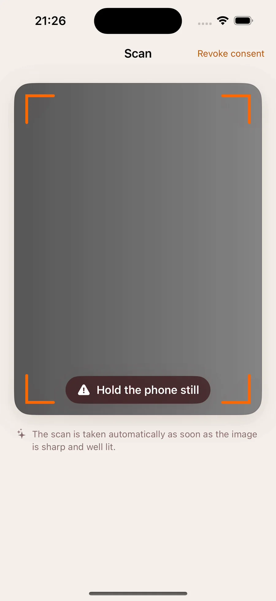
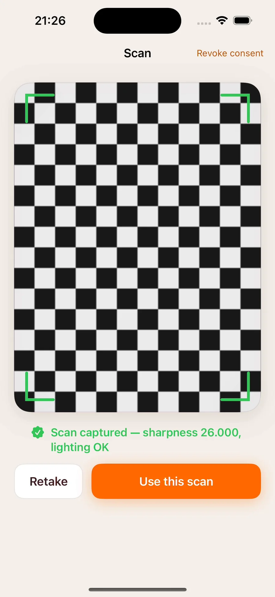
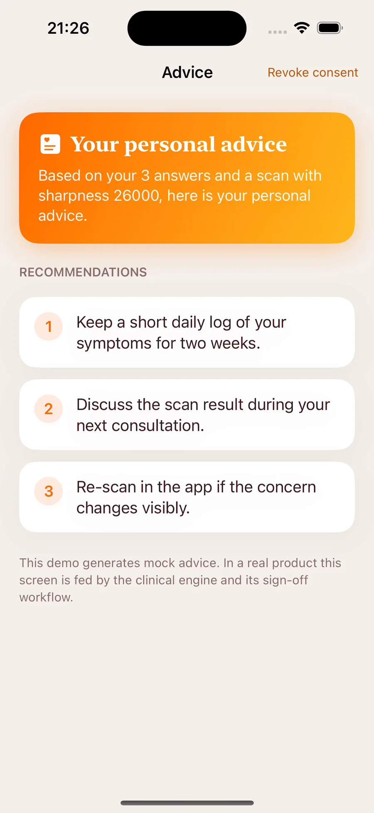
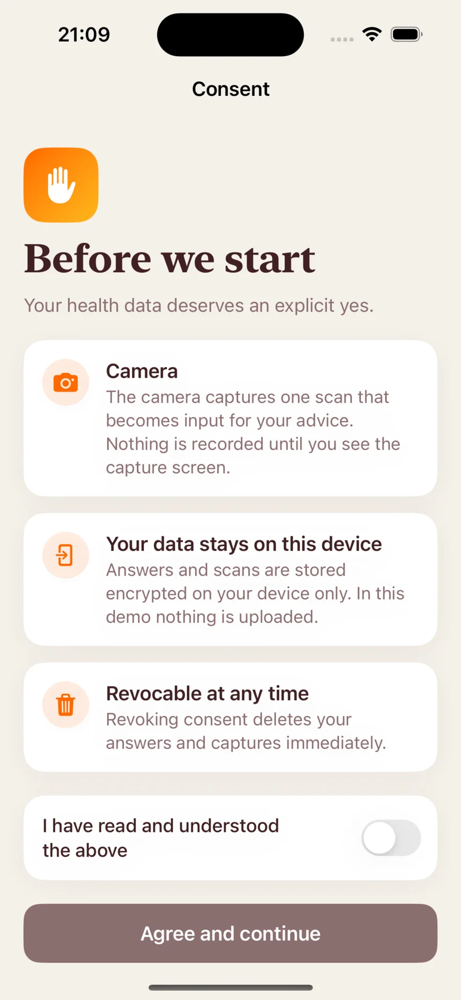
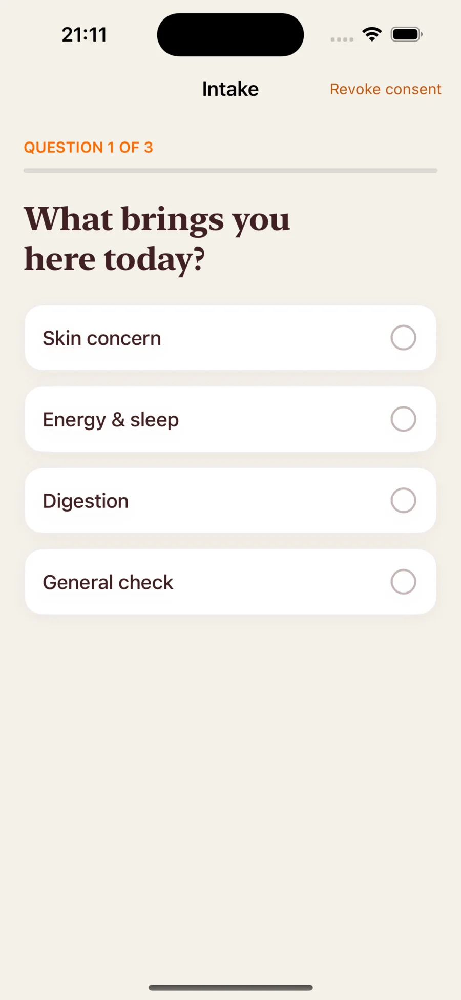

Advice goes live only after a clinician says so.
A health intake flow that turns an anamnesis and a camera scan into personal advice, built the way a regulated product demands it: consent first, a capture pipeline that never hands a bad frame downstream, submissions that survive a dead network, and a sign-off gate enforced by the type system on the phone and again on the server.



Why it exists
In digital health, the boring parts are the product.
A blurry photo feeds a model that confidently returns nonsense. A flaky network creates a duplicate record or loses one. Advice reaches a patient before anyone qualified has looked at it. Consent is a checkbox nobody can audit later.
Every frame is scored on sharpness, light and framing, and capture happens only after three usable frames in a row. Submissions carry an idempotency key, so a replay never stores twice. Advice is null in the API until a clinician approves it, and consent is versioned and revocable.
How it works
Five modules, each answering a real requirement
From the camera to the clinician and back, with the checks written down.
Quality-gated capture
Variance-of-Laplacian sharpness, luminance and Vision face framing, one instruction at a time. Auto-capture only after three consecutive good frames.
Reliable offline sync
A persisted, deduplicated queue with backoff and per-item attempts. A stuck item never blocks the rest, and a killed app resumes the draft.
Sign-off as a type
Advice content is null until Approved, enforced client-side by a type and server-side by the controller. Review runs on a small clinician page behind an API key.
Privacy by design
Versioned, revocable consent, data minimisation, encryption at rest, and logs that never contain answer content.
Accessible from the start
Headers, combined elements, hidden decoration and live camera guidance for VoiceOver, applied in every view.
Tested and in CI
Swift unit and end-to-end UI tests, plus a backend suite against real PostgreSQL, format check, coverage and a Docker build.
How one submission travels
Screens
What it looks like
Simulator captures. On a device you get the live camera; in the simulator a synthetic frame source replays the blurry-to-sharp journey.


Evidence
What is real, and what is not
REAL Built and verified
- The backend is real: ASP.NET Core and PostgreSQL, idempotent submissions, API-key-gated clinician review, Docker and CI
- The capture analyser is a pure function, tested with synthetic sharp and blurred frames
- iOS and backend run in separate CI workflows, weekly as well, so a toolchain change shows up early
SIMULATED Mocked or not built yet
- All medical content and advice text is mock; nothing here is clinical guidance
- A shared API key stands in for per-clinician identity; push instead of polling, localisation and analytics are documented but not built
- The default app talks to a mock API so CI needs nothing else; the real backend is opt-in through API_BASE_URL
Run it yourself
Run it locally
brew install xcodegen # once
xcodegen generate
open HealthIntake.xcodeproj # run the HealthIntake scheme
# the real backend (Postgres + API)
cd Backend && docker compose upGo deeper